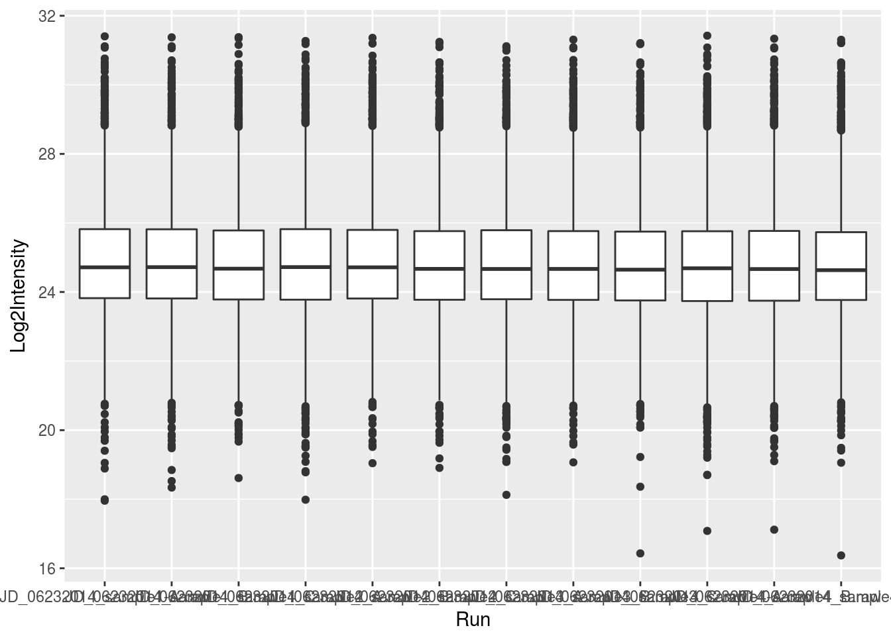

Chapter 4 Plotting in R
4.1 Base graphics
4.2 Plotting with ggplot2
Base graphics uses a canvas model a series of instructions that sequentially fill the plotting canvas. While this model is very useful to build plots bits by bits bottom up, which is useful in some cases, it has some clear drawback:
- Layout choices have to be made without global overview over what may still be coming.
- Different functions for different plot types with different interfaces.
- No standard data input.
- Many routine tasks require a lot of boilerplate code.
- No concept of facets/lattices/viewports.
- Poor default colours.
The ggplot2 package implements a grammar of graphics. Users describe what and how to visualise data and the package then generates the figure. The components of ggplot2’s of graphics are
- A tidy dataset
- A choice of geometric objects that servers as the visual representation of the data - for instance, points, lines, rectangles, contours.
- A description of how the variables in the data are mapped to visual properties (aesthetics) or the geometric objects, and an associated scale (e.g. linear, logarithmic, polar)
- A statistical summarisation rule
- A coordinate system.
- A facet specification, i.e. the use of several plots to look at the same data.
Fist of all, we need to load the ggplot2 package and load the iprg data.
library("ggplot2")
iprg <- read.csv("http://bit.ly/VisBiomedDataIprgCsv")ggplot graphics are built step by step by adding new elements.
To build a ggplot we need to:
- bind the plot to a specific data frame using the
dataargument
ggplot(data = iprg)- define aesthetics (
aes), by selecting the variables to be plotted and the variables to define the presentation such as plotting size, shape color, etc.
ggplot(data = iprg, aes(x = Run, y = Log2Intensity))- add
geoms– graphical representation of the data in the plot (points, lines, bars). To add a geom to the plot use+operator
ggplot(data = iprg, aes(x = Run, y = Log2Intensity)) +
geom_boxplot()
See the documentation page to explore the many available geoms.
The + in the ggplot2 package is particularly useful because it allows you to modify existing ggplot objects. This means you can easily set up plot “templates” and conveniently explore different types of plots, so the above plot can also be generated with code like this:
## Assign plot to a variable
ints_plot <- ggplot(data = iprg, aes(x = Run, y = Log2Intensity))
## Draw the plot
ints_plot + geom_boxplot()Notes:
Anything you put in the
ggplot()function can be seen by any geom layers that you add (i.e., these are universal plot settings). This includes the x and y axis you set up inaes().You can also specify aesthetics for a given geom independently of the aesthetics defined globally in the
ggplot()function.The
+sign used to add layers must be placed at the end of each line containing a layer. If, instead, the+sign is added in the line before the other layer,ggplot2will not add the new layer and will return an error message.
4.3 References
ggplot2extensions - galleryggplot2webpage and documentation- ggplot2: Elegant Graphics for Data Analysis book (source of the book available for free here).